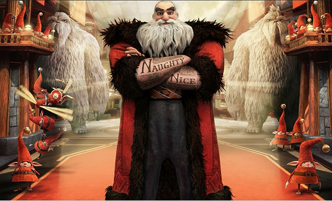

About Santa Claus
Nicholas St. North, better known as Santa Claus, is the Guardian of Wonder and the leader of the Guardians. from a movie and an immortal supernatural being much like the Guardians.He has a good relationship with the Guardians, he has some helpers: Elves and Yetis. He has his own ride too: The sleigh with the reindeers. His enemy is Pitch Black. He has his Globe of Belief in his house or so-called Workshop. He has a wife, but she isn't mentioned in the movie. His wife is Missus Claus or South. He has no children of his own, except Jack Frost, that (what he sees) could be his son because he has the powers to make snow. North is a warrior with a heart of gold. Fierce, demanding, and impulsive, everything about him is larger than life. For North, nothing is impossible as long as he believes in it."

Santa Claus
North’s characteristics
- North is a strong and powerful man. He is a master swordsman and he consider himself the best in the world. His skill in swordsmanship are so advanced that the Man in the Moon and Ombric trusted him with one of the legendary relics, Tsar Lunar XI's Sword.
- North has an ability to find the wonder in everything around him which helps him in his creation of toys and inventions. It also boosts his faith in others and resolve, and helps him be jolly and a little childish but gives him a unique insight.
- North was trained and tutored in magic by Ombric. His skills in magic has been so great that Ombric, himself, have said that North may have surpassed him already. He is able to combine magic with his inventions which ends with amazing results like the Djinni Robot. As the Overseer of Christmas, he also has his Naughty and Nice Lists imprinted on his arms, which he can handle at anytime, check to see what child goes on which list, and even remove a name from either (as was implied when Jack was brought to his workshop to become a Guardian).
- North is also a master craftsman and toymaker, and can create amazing toys, some of them imbued with magical abilities, as well as invent magical tools and objects, like the Globe of Belief in his workshop, his famous reindeer-pulled sleigh, or his Snowglobes that become portals to anywhere in the world.
North’s friends

North, Jack Frost, Tooth Fairy